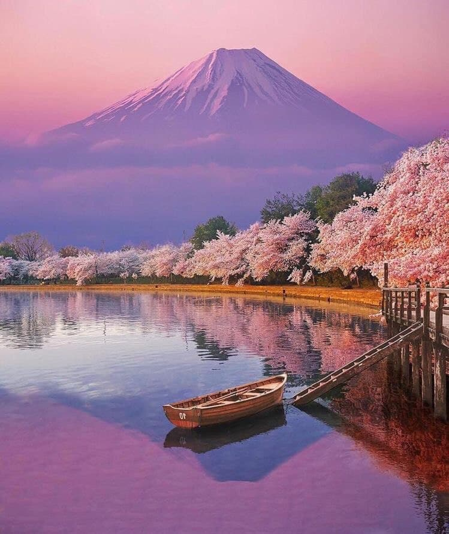
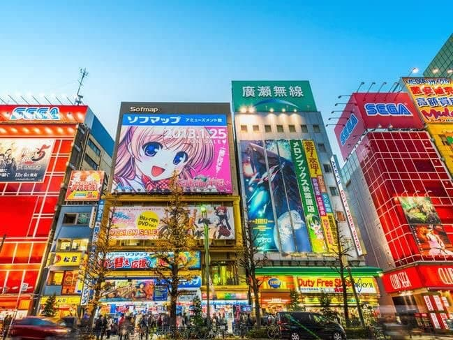
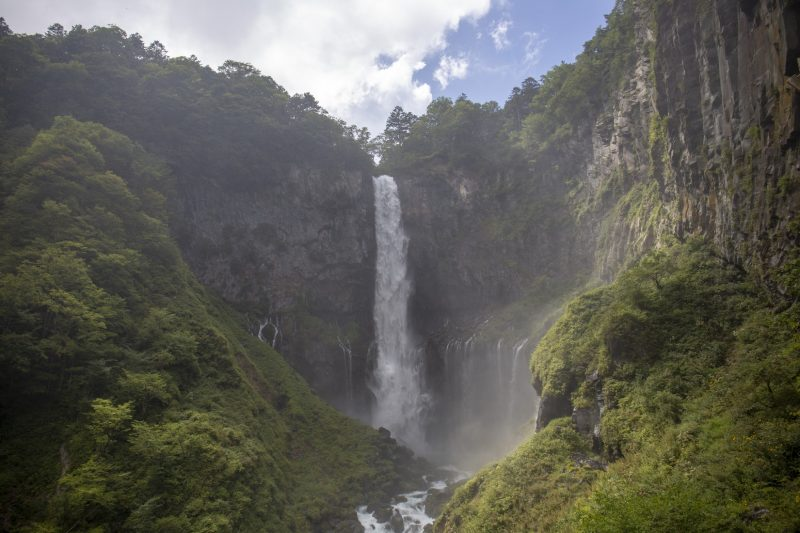

Le Japon, pays des sakuras(cerisiers), pays des nouvelles technologie, pays des ninjas et samourais, pays du monts fuji et des valée de riz, le japon autrement dit le pays du soleils levants est yn pays qui ferais revait tout personnes qu'il soit otaku, un gastronomique ,un chasseur de rêves ou un simple curieux, le japon est un pays trés attractif.Situé a l'est de l'Asie le Japon est un une archipel de 377 975 km2.
le mont fuji est une montagne du centre du Japon qui se trouve sur la côte sud de l'île de Honshū, au sud-ouest de l'agglomération de Tokyo. Avec 3 776 mètres d'altitude, il est le point culminant du Japon.Le Mont Fuji est considéré comme une montagne sacrée depuis le VIIème siècle. Dans les croyances shinto, on raconte qu'un empereur donna l'ordre de détruire à son sommet un élixir d'immortalité qu'il détenait. Ainsi, la fumée qui s'échappe parfois du cratère serait due à cet élixir qui se consume.
Symbole de l’ultra-modernité et de la démesure, temple des jeux vidéo et des nouvelles technologies, Tokyo combleras tout otaku et gameur qui y trouverons certainement leur place.Sans oublié biensure les specialité japonaise que sont les ramens.
Située à cent-cinquante kilomètres au nord de Tokyo, elle est l’endroit idéal pour visiter de superbes sanctuaires classés au Patrimoine mondial de l’Unesco, tout se promenant dans une forêt de cèdres millénaires. Pour se détendre après une bonne journée de marche, rien de tel que de se baigner dans les onsen de la petite ville thermale de Yumoto. Ces sources chaudes vous raviron
Il existes beaucoup d'autres sites tout aussi fantastiqueque ceux énumerés ci-haut, tels que la la region de kanto, Shibuya, Okaido et l'ancienne capital imperial(kyoto). Pour plus de sites et de reférencement veuillez cliquezsur le lien suivant Les 20 plus beaux endroits à visiter au Japon